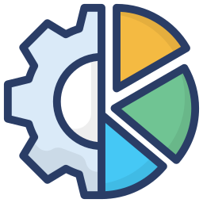

Home
Simulador
|
Login
Cadastro
Filtros
Setor
Setor:
Seleção
Higienização
Processamento
Embalagem
Armazenamento
Distribuição
Esteira
Esteira:
Esteira 1
Esteira 2
Esteira 3
Esteira 4
Esteira 5
Esteira 6
Esteira 7
Esteira 8
Esteira 9
Esteira 10
Data
Dia:
06/05/2025
07/05/2025
08/05/2025
09/05/2025
KPI
Sensor
Sensor:
A24
H34
C04
X94

KPI
Selecione Sensor
Monitoramento por setor - 25/04/2025
Selecione Um Setor